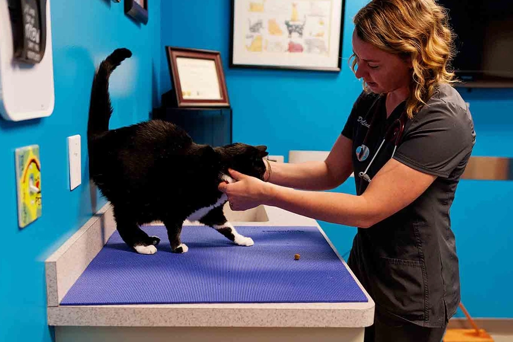

Contamos con instalaciones modernas y equipadas con tecnología de punta para brindar el mejor diagnóstico a tu mascota.

Lunes a Viernes: 8:00 AM - 7:00 PM
Sábados: 9:00 AM - 4:00 PM
Domingos: Solo Urgencias